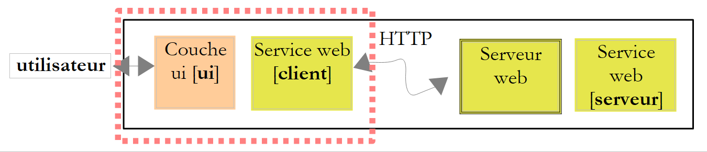
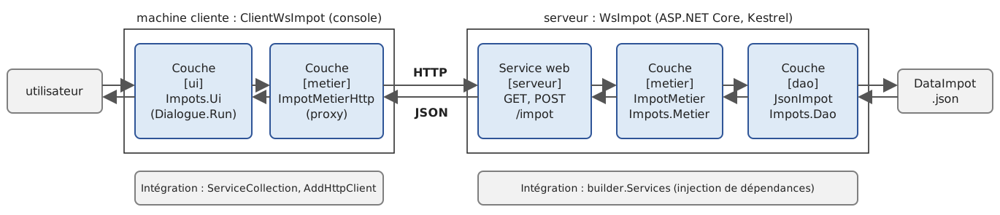
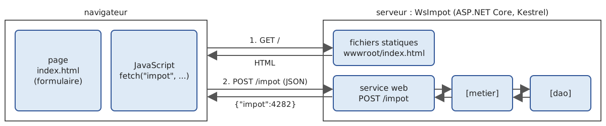
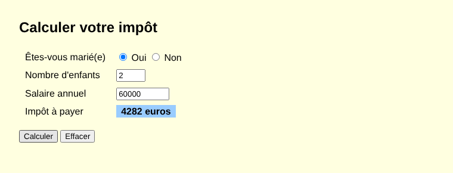

13. Web Services
13.1. Introduction
In the previous chapter, we presented several TCP/IP client-server applications. Since the clients and the server exchange lines of text, they can be written in any language. The client simply needs to know the communication protocol expected by the server.
Web services are also server applications (TCP/IP). They have the following characteristics:
- they are hosted by web servers, and the client-server exchange protocol is HTTP (HyperText Transfer Protocol), a protocol built on top of TCP/IP, which we explored in the previous chapter;
- the web service has a standard communication protocol, regardless of the service provided. A web service offers various services: S1, S2…, Sn. Each of these services expects parameters provided by the client and returns a result to the client. For each service, the client needs to know:
- how to specify the service Si;
- the list of parameters to be provided and their types;
- the type of result returned by the service. Once these elements are known, the client-server dialogue follows the same format, regardless of which web service is being queried. This standardizes client communication;
- To protect against attacks from the Internet, many organizations open only certain ports on their servers to the outside world: primarily ports 80 (HTTP) and 443 (HTTPS) for the web service. All other ports are locked. Consequently, client-server applications such as those described in the previous chapter are generally restricted to the organization’s private network (intranet). Hosting a service on a web server makes it accessible to the entire Internet community;
- the web service can be viewed as a remote object: the services it offers then become methods of that object. A client can use this remote object as if it were local, through an intermediary object called a proxy, which hides all network communication. This allows us to build a client that is independent of this layer: if the layer changes, the rest of the client does not need to be modified;
- As with the TCP/IP client-server applications from the previous chapter, the client and server can be written in any programming language. They exchange lines of text consisting of two parts: the headers required by the HTTP protocol and the message body, whose format is agreed upon between the client and the server.
The architecture of a web service-based client-server application is as follows:

This is an extension of the layered architecture from Chapter 6, to which specialized network communication layers are added: the client-side web service client and the web service itself on the server side. We have already encountered a similar architecture with the TCP tax calculation server (version 8) from the previous chapter.
13.1.1. Yesterday: SOAP and WSDL
In 2008, this course used the SOAP web services from the .NET Framework: [.asmx] files created with Visual Web Developer, whose public methods were marked with the [[WebMethod]] attribute. The client sent a HTTP POST request whose body was a XML document in SOAP (Simple Object Access Protocol) format: an “envelope” containing the method name and its parameters. The server responded with another XML envelope containing the result. Each service was described by a XML document in WSDL format (Web Services Description Language), available at the service’s URL followed by [?WSDL]: it listed the methods, their parameters, and their types. Based on this document, tools (the “Add Web Reference” wizard in Visual Studio, [wsimport] in Java) automatically generated the service proxy. This technology, and later its successor WCF (Windows Communication Foundation), were widely used in the 2000s. They are now deprecated: neither ASMX nor the server-side component of WCF exists in .NET (Core)—only a community port, CoreWCF, exists for migrating legacy applications. The reasons for this discontinuation are the cumbersomeness of XML and the SOAP envelopes, the complexity of the associated standards (WS-Security, WS-Addressing, etc.), and the difficulty of calling these services from a browser.
13.1.2. Today: REST and JSON
Most current web services follow the REST style (REpresentational State Transfer) and exchange JSON documents (JavaScript Object Notation, presented in Chapter 5). The REST style is based on the following principles:
- the service exposes resources, each designated by a URL: [/impot], [/clients/12], [/clients/12/commandes];
- these resources are accessed using the methods (also known as verbs) of the HTTP protocol, each of which has a specific meaning;
- the result of the action is indicated by the HTTP status code in the response;
- the body of requests and responses is most often a JSON document, which is more compact and simpler than XML;
- The service is stateless: each request contains all the information necessary for its processing; the server does not store any information from one request to the next for a given client.
The most commonly used HTTP methods are as follows:
Method | Usage | Example |
GET | Read a resource; any parameters are in the URL | GET /clients/12 |
POST | Create a resource or request processing; the data is in the request body | POST /clients |
PUT | Replace a resource | PUT /clients/12 |
PATCH | Modify part of a resource | PATCH /clients/12 |
DELETE | Delete a resource | DELETE /clients/12 |
The status codes, which were introduced in the previous chapter, take on their full meaning here:
Code | Meaning |
200 OK | The request was successful; the response body contains the result |
201 Created | The resource was created; the [Location] header provides its URL |
204 No Content | The request was successful; the response has no body |
400 Bad Request | The request is invalid (missing or invalid parameter, etc.) |
404 Not Found | The requested resource does not exist |
500 Internal Server Error | An unexpected error occurred on the server |
A REST service does not have a required equivalent in WSDL. However, it is common practice to describe it using a OpenAPI document (formerly Swagger), in JSON or YAML format, from which tools can generate documentation, test pages, and clients. We’ll come back to this later.
Finally, note gRPC, designed by Google: the service’s methods and their messages are described in a [.proto] file, from which tools generate the server and client, just as they did in the days of WSDL; the messages are encoded in a compact binary format (Protocol Buffers) and transmitted via HTTP/2. gRPC is very efficient and popular for communication between services within the same organization, but it is ill-suited for browsers. It is available as .NET with the [Grpc.AspNetCore] package, which we will not be using.
13.1.3. ASP.NET Core and the Minimal API
To develop our web services, we will use ASP.NET Core, the .NET web development framework, and more specifically its Minimal API (.NET 6, 2021): In this framework, a URL and a HTTP method are directly associated with a C# function, most often a lambda. The web server is Kestrel, a HTTP server written in C# and integrated into the application: there is no need to install a separate web server, as was the case with IIS (Internet Information Services) in 2008. ASP.NET Core is part of the [Microsoft.AspNetCore.App] shared framework, which is installed with SDK and NET: it does not require any NuGet packages.
Visual Web Developer, the free Microsoft tool used in 2008 to write web services, no longer exists: the [dotnet] commands are sufficient, and any code editor will work (Visual Studio Code, Visual Studio, Rider).
13.2. A First Web Service
We’re going to build a simple client-server application with the following simplified architecture:

The projects in this chapter are grouped into a solution named [13-services-web.slnx], created using the following commands, entered in the [13-services-web] folder:
The projects are already included in the course materials: the [13-services-web] folder in the ZIP file contains the solution and the six projects, complete and modified as described in this chapter. The reader therefore does not need to enter the commands above (they would fail anyway, since the folders already exist): they demonstrate how these projects were created and how to create your own. To run a provided project, simply navigate to its folder and type [dotnet run] (or open [13-services-web.slnx] in Visual Studio or VS in Code). The same applies later for the commands [dotnet add ... reference] and [dotnet add ... package]: the references and packages are already included in the provided [.csproj] files.
The [web] template from [dotnet new] creates an empty ASP.NET Core application project. The three web services in this chapter ([WsHello], [WsOperations], [WsImpot]) are created using this template, and their clients are created using the standard [console] template. This results in the following directory structure (only the main files are listed):
13.2.1. The server-side

The project file [WsHello.csproj] generated by [dotnet new web] is as follows:
Comments:
- Line 1: The only difference from a console project is the SDK used—[Microsoft.NET.Sdk.Web] instead of [Microsoft.NET.Sdk]. The web-based SDK references the shared ASP.NET Core framework and adds the namespaces from ASP.NET Core to the implicit [using] namespaces ([Microsoft.AspNetCore.Builder], [Microsoft.AspNetCore.Http], [Microsoft.Extensions.DependencyInjection], [Microsoft.Extensions.Logging]…);
- There is no line for [OutputType]: a web application is always an executable.
The generated program [Program.cs] is reduced to four instructions:
- Line 1: [WebApplication.CreateBuilder] prepares the web application for build: it reads the configuration ([appsettings.json] files, environment variables, command-line arguments), sets up logging, and configures the dependency injection container we used in Chapter 6. [builder] allows you to complete this preparation, for example, by registering services in the container;
- line 2: the application is built;
- line 4: the methods HTTP, GET, and URL, [/] (the site root) are associated with a lambda. When the server receives the request [GET /], it will execute the lambda and send the result—in this case, the text [Hello World!]—to the client;
- Line 6: The Kestrel server is started; it waits for requests until the application is stopped (Ctrl-C).
The template also creates three configuration files:
- [appsettings.json]: the application configuration;
- [appsettings.Development.json]: values that override those in [appsettings.json] when the application runs in the "Development" environment;
- [Properties/launchSettings.json]: "launch profiles" used by [dotnet run] and by Visual Studio. They set the listening port, which is randomly selected by [dotnet new] (5273, for example), and the environment variable [ASPNETCORE_ENVIRONMENT=Development].
The runtime environment (Development, Staging, Production) changes the application’s behavior. In particular, in the Development environment, an unhandled exception produces a response containing all the details of the exception, including the call stack: this is useful for the developer, but would be a security vulnerability in production. To ensure that our results match what a user would see, we have removed [launchSettings.json] and [appsettings.Development.json] (they are therefore absent from the delivered projects): our services run in the default environment, Production. The listening port is then set in [appsettings.json]:
- Lines 2–5: Logging: Messages at level [Information] and above are displayed, except for those from ASP.NET Core itself (category [Microsoft.AspNetCore.*]), which are limited to warnings ([Warning]) and errors;
- line 8: the machine names accepted in the HTTP and [Host] headers of requests; [*] accepts all of them;
- line 9: we added this line: the server listens on port 5100 of the machine [localhost]. The address could also be passed as an argument: [dotnet run --urls http://localhost:5100], or via the environment variable [ASPNETCORE_URLS].
The [WsHello] web service is a continuation of the 2008 service, whose single method, [DisBonjourALaDame], returned the string [Bonjour Mme xx]. Its code, [Program.cs], is as follows:
Comments:
- line 6: the site’s root page displays text explaining how to use the service;
- line 11: the URL template (known as the route) [/hello/{nom}] contains a route parameter [{nom}]: it corresponds to any segment of URL placed after [/hello/]. Thus, URL [/hello/Carla%20Bruni] assigns the value [Carla Bruni] to [{nom}] (the code [%20] represents a space in URL). ASP.NET Core automatically passes this value to the parameter of the same name in the lambda: this is parameter binding. The 2008 web method has become a URL. The lambda returns a string: this is sent as-is to the client as a text document (type [text/plain]);
- Line 14: the same thing, but the lambda returns an object of type [Salutation]. ASP.NET Core serializes it to JSON using [System.Text.Json] (Chapter 5) and sends it to the client as a document of type [application/json]. This is the standard format for a REST web service response;
- line 17: the server waits for requests;
- line 20: the result type, a [record] (Chapter 4). In a high-level programming language, type declarations come after the statements.
The service is launched by the command [dotnet run], entered in the project folder. It displays its log:
- line 3: the server is listening on port 5100;
- line 5: the application is ready. It can be stopped with Ctrl-C;
- line 7: the runtime environment is Production;
- line 9: the root folder of the application’s content, where [appsettings.json] and the [wwwroot] folder containing static files are searched for. With [dotnet run], this is the project folder (the course replaced the beginning of the path with [...]);
- Line 11: This message appeared when the server was stopped using Ctrl-C, after the tests described in the following paragraphs.
Each log message indicates its level ([info], [warn], [fail], [crit]…), and its category—in this case, [Microsoft.Hosting.Lifetime]—followed by an event number in square brackets.
13.2.2. Querying the service with curl
While the service is running, let’s query it in a second command window using the [curl] tool introduced in the previous chapter. The [-i] option displays the response headers before the body, and the [-s] (silent) option suppresses the progress bar:
- line 2: the request was successful;
- line 3: the document is text (UTF-8);
- line 6: the document is sent in chunks, each preceded by its size: Kestrel did not have to calculate the total size of the document before starting to send it;
- line 8: the result of the web method.
In 2008, the ASMX service responded with a document named XML: [<string xmlns="http://st.istia.univ-angers.fr">Bonjour Mme Carla Bruni</string>]. Now let’s request the version JSON:
- line 3: the document is now of type [application/json];
- line 8: the serialized [Salutation] object. Note that the names of the C# properties [Nom] and [Message] have become [nom] and [message]: ASP.NET Core uses the “Web” options JSON from [System.Text.Json] ([JsonSerializerDefaults.Web], Chapter 5), which write the names as “camelCase,” as used in JavaScript.
A URL that does not match any route returns a 404 response:
You can also type URL or [http://localhost:5100/hello/Carla Bruni] into a browser’s address bar, which will display the received text: a web service queried by GET can be tested very easily. In 2008, the ASMX server generated a test page (HTML) for each method.
13.2.3. A console client

It is possible to implement the service client using a simple TCP client, as shown in the previous chapter: simply send the HTTP request and read the response. However, we use the [HttpClient] class—also introduced in the previous chapter—which handles the HTTP protocol for us. The [ClientWsHello] project is a standard console project. Its program is as follows:
Comments:
- line 1: the namespace for the extension methods of [HttpClient] that exchange JSON;
- line 5: the service’s URL is passed as an argument or, failing that, defaults to [http://localhost:5100/]. This is equivalent to the 2008 [app.config] file, which contained the service address: if this changes, the client does not need to be recompiled;
- Line 8: a single [HttpClient] for the entire program. Its [BaseAddress] property is the base URL, to which the URL values related to the requests are added. Note: The base URL must end with [/] for [hello/...] to be added to it;
- Line 22: The entered name becomes a segment of the URL. [Uri.EscapeDataString] encodes characters that are not allowed in it: a space becomes [%20], the character “é” becomes [%C3%A9]…;
- line 24: a request GET whose response is read as a character string;
- line 27: a request GET whose response JSON is deserialized into an object of type [Salutation]. The client does not have access to the server’s [Salutation] type: it declares its own (line 38), with the same property names. Deserialization also uses the “Web” options, which ignore case in names: [nom] is assigned to the property [Nom];
- line 30: both methods throw a [HttpRequestException] if the service is unreachable or if it responds with an error code (4xx, 5xx).
Results, with the service running:
Line 4 displays the received [Salutation] object in the format of the [ToString] method generated for the [record]. If an address is specified where no service is listening, the connection is refused:
In 2008, the client used a [ServiceSoapClient]-class proxy, generated by Visual Studio from the service’s WSDL, and called the remote method as if it were a local method: [new ServiceSoapClient().DisBonjourALaDame("Carla Bruni")]. Here, we are calling the service’s URL directly. We will write a true proxy for the tax calculation service.
13.2.4. The service description: OpenAPI
The 2008 WSDL document described the service in a standardized format. Its current equivalent is the OpenAPI document. Since version 9 of .NET, ASP.NET Core can generate it from the declared routes, using the [Microsoft.AspNetCore.OpenApi] package:
The [/openapi/v1.json] document then describes each route: its URL, its HTTP method, its parameters and their types, and the JSON schema for its responses. Tools like Swagger UI or Scalar generate a test web page from it, and generators like Kiota or NSwag generate a typed client in various languages, just as the “Add Web Reference” wizard did with the WSDL. Since the [Microsoft.AspNetCore.OpenApi] package is not available on our test machine (which does not have Internet access), we cannot show the generated document.
13.3. A Web Service for Arithmetic Operations
The previous service offered a single method. We will now consider, as we did in 2008, a web service that offers the four arithmetic operations: add(a, b), subtract(a, b), multiply(a, b), and divide(a, b). We will take this opportunity to study the two ways to pass parameters to a web service and how to report errors.
13.3.1. The server-side
The [WsOperations] service accepts two types of requests:
Request | Parameters |
GET /add?a=1.5&b=2 | The operation in the URL path, the numbers in its query string |
POST /calculate | a document JSON in the request body: [{"operation":"ajouter","a":1.5,"b":2}] |
In both cases, the response is a document JSON: [{"operation":"ajouter","a":1.5,"b":2,"resultat":3.5}]. GET is suitable for simple requests that do not modify anything on the server: the URL can be typed into a browser, bookmarked, and its response can be cached. POST is suitable for large or structured data. Its [appsettings.json] file is identical to that of [WsHello], except for the port (5110). Its program is as follows:
Comments:
- Line 6: The service that generates error responses in the Problem Details format is registered. This format, standardized by RFC 9457, is a JSON document of type [application/problem+json] that describes an error: its type, a title, the status code, a detail, and any additional information. This is the standard way for a REST service to indicate what is wrong;
- Line 9: We install middleware—that is, a link in the processing chain through which every request passes. This middleware adds a “Problem Details” body to error responses that do not have one, such as the 404 responses generated by ASP.NET Core for unknown URL requests;
- Lines 13–14: the GET request. The [operation] parameter in the lambda is bound to the route parameter [{operation}]. The parameters [a] and [b], which do not appear in the route, are linked to the parameters of the same name in the query string ([?a=1.5&b=2]). They are declared as type [string?]: a missing parameter is treated as [null]. We could have declared them as type [double]: ASP.NET Core would then have performed the conversion itself and rejected a missing or incorrect value with a 400 response without explanation. By receiving them as strings, we retain control over the error messages;
- lines 18–19: the request POST. The parameter [demande] is of a complex type ([DemandeCalcul], line 72): ASP.NET Core deserializes it from the JSON body of the request. Its properties are nullable: a property missing from the JSON document is set to [null];
- lines 25–26: the conversion of a string to a number; if it fails, the result is [null]. In both URL and JSON, numbers are written with a decimal point: the conversion is performed using the invariant culture (Chapter 5), not the server’s French culture, which would expect a comma. The local functions [LireNombre] and [Calculer] are declared after [app.Run]; they are static ([static]) because they do not use any variables from the main program;
- lines 33–39: The requested operation is represented by a delegate (Chapter 7) selected by the expression [switch]: one lambda per operation; [null] for an unknown operation;
- lines 42–53: The three parameters are verified by accumulating errors in a dictionary that associates each parameter with its list of error messages;
- line 55: if an error was found, a 400 response is returned. The filtering by pattern [a is not double x] is true if [a] equals [null]; otherwise, it assigns the value of [a] to the variable [x]. The compiler knows that after this [if], [calcul], [x], and [y] have values: it issues no warnings;
- line 58: the static class [Results] returns the usual responses. [ValidationProblem] returns a 400 response in the “Problem Details” format containing the validation errors (property [errors]);
- Lines 62–65: Division by zero is rejected with a 400 response in the “Problem Details” format, generated by [Results.Problem]. This rejection is necessary: in C#, dividing a [double] by zero does not throw an exception but returns infinity ([double.PositiveInfinity]), which a JSON document cannot represent. The 2008 service, which did not perform this check, would have returned infinity, which the XML serialization of .NET writes as [INF];
- line 68: the 200 response, whose body is the object [ResultatCalcul] serialized to JSON;
- lines 72–74: the two types exchanged with clients. These objects, which are used solely to transport data between two applications, are called DTO (Data Transfer Object). [record] objects are ideal for this purpose.
The [Calculer] method returns an object of type [IResult]: this is the interface for the objects produced by [Results]. Anyone can write the corresponding HTTP response (status code, headers, body).
13.3.2. Testing with curl
The service is launched by [dotnet run] in the [WsOperations] folder. An addition:
Division by zero:
- Line 2: The request is rejected;
- line 3: the body is a “Problem Details” document;
- line 8: the document contains the properties [type] (a URL that documents the error type, in this case the section of RFC 9110 that defines code 400), [title], [status], and [detail], set by our call to [Results.Problem], and [traceId], a unique identifier for the request that allows it to be retrieved from the server logs.
An unknown operation, a number written with a decimal point, and a missing number:
The [errors] property of the document contains the validation errors, parameter by parameter. Now, a request for POST. The [-d] option of [curl] sends the text that follows it in the body of a POST request, and the [-H] option adds a header to the request, in this case the type of the document being sent:
If the sent JSON document is incorrect, ASP.NET Core cannot construct the [demande] parameter: it responds with a 400 error on its own, without executing our lambda:
The “Problem Details” document on line 8 was generated by the [UseStatusCodePages] middleware. In the Development environment, it would contain the full description of the deserialization error.
13.3.3. The client side
The 2008 graphical client featured a list of operations, two input fields, and a button. Our console client prompts the user for the operation and the two numbers on a single line, then queries the service twice: first using GET, then using POST, to demonstrate both methods. Here is the program:
Comments:
- lines 25–32: The numbers are validated locally before any service call, as the 2008 graphical client did. They are entered with a decimal comma (fr-FR culture);
- lines 40–41: the URL from the GET request. Numbers must be written there with a period: since the [$"..."] interpolation uses the current locale, the string is constructed with [string.Create], which receives the locale to be used—in this case, the invariant locale;
- Line 45: the request GET and the deserialization of its response JSON into an object [ResultatCalcul]. If the response status code is not a success code (2xx), [GetFromJsonAsync] triggers a [HttpRequestException]: the response body, which explains the error, is then lost;
- line 51: the [StatusCode] property of the exception contains the response status code, or [null] if the service did not respond (service unreachable);
- line 57: the request POST: the object [DemandeCalcul] is serialized as JSON in the request body. [PostAsJsonAsync] does not throw an exception for an error code: it returns the response ([HttpResponseMessage]), which we examine;
- line 58: [true] for a 2xx code;
- line 61: if successful, the body is deserialized into a [ResultatCalcul] object;
- lines 67–75: if the request fails, the body is a “Problem Details” document, deserialized into a [Probleme] object (line 90), from which the title, details, and validation errors are displayed. The [foreach] loop parses each element of the [Errors] dictionary into a tuple (Chapter 5); [?? []] replaces a missing dictionary with an empty collection;
- lines 87–90: the client’s DTO files. They are declared here again: a client does not share the server’s code, only the format of the exchanged JSON documents. ASP.NET Core does indeed provide a [ProblemDetails] class, but it is part of the web framework; a simple [record] is sufficient for the client.
Results, with the service running:
- line 3: the URL from the GET request: the number 1.5 entered is written as 1.5;
- Lines 6–8: The same error is observed in both requests: [GetFromJsonAsync] only recognizes the code 400, whereas reading the response POST reveals the explanation provided by the service;
- lines 11–12: the unknown operation was detected by the service;
- line 14: the incorrect number was detected by the client, which did not query the service.
13.4. Sample Application—Version 9: A Web Service for Calculating Taxes
We’ll revisit the tax calculation application. In the previous chapter (version 8), we had created a TCP server that could be queried remotely, using its own communication protocol. We’ll now turn it into a REST web service.
13.4.1. The Architecture
The architecture of version 9 is as follows:

- on the server side, the [WsImpot] web service receives HTTP requests and has them processed by the [metier] and [dao] layers from Version 5 (Chapter 6), which are reused as-is;
- on the client side, the [ui] layer from version 5 is also reused as-is. It communicates with a new type of [metier] layer, [ImpotMetierHttp], which implements the [IImpotMetier] interface by querying the web service: it acts as a proxy for the service. The [ui] layer is unaware that the calculation is performed on another machine;
- on both sides, the integration of the layers is handled by the dependency injection container, which replaces Spring.NET used in 2008.
13.4.2. The web service
The service contract is as follows:
Request | Response on Success | Response in case of an error |
GET /tax?spouse=o&children=2&salary=60000 | 200: [{"impot":4282}] | 400: "Problem Details" document |
POST /impot with the body [{"marie":true,"enfants":2,"salaire":60000}] | 200: [{"impot":4282}] | 400: "Problem Details" document |
Project [WsImpot] refers to the projects in layers [dao] and [metier] from version 5:
- Lines 11–12: the two project references. They are added using the command [dotnet add WsImpot reference ../06-architectures/ImpotsV5/Impots.Dao ../06-architectures/ImpotsV5/Impots.Metier], entered in the [13-services-web] folder (not necessary for the delivered project, where they are already present). The data files [DataImpot.txt] and [DataImpot.json] from the [Impots.Dao] project are copied next to the service executable (Chapter 6).
In 2008, the DLL files for the layers had to be copied to a [lib] folder on the website and added to the project’s references. The configuration file [appsettings.json] is as follows:
- line 9: the service listens on port 5120;
- Lines 10–12: the configuration for the [dao] layer, in the same format as in the [appsettings.json] file from version 5: the implementation to use and its data file. Here, we use the JSON file.
The service program is as follows:
Comments:
- Lines 10–11: The configuration of the [dao] layer is read from [builder.Configuration]. This object combines all configuration sources: the [appsettings.json] file, environment variables, and command-line arguments. In Chapter 6, we had to build a [ConfigurationBuilder] ourselves; ASP.NET Core does this for us;
- lines 12–20: registering the [dao] and [metier] layers in the ASP.NET Core dependency injection container, [builder.Services]. These lines are from the main program in version 5: the container is the same ([IServiceCollection]); the only difference is where it is obtained. In 2008, this integration was handled by Spring.NET, configured in the file [web.config];
- Lines 28–35: Both layers are singletons, created by the container on the first request. We trigger this creation right at startup, before processing any requests: if the data file is missing or incorrect, the service stops immediately with a clear message, rather than returning a 500 error to all requests. This is the role that the [Application_Start] method in the [Global.asax] file played in 2008. [app.Logger] is the application log; [LogCritical] writes a critical-level message to it. The message text is a template: [{Message}] and [{Cause}] are replaced by the following arguments, in order. Unlike a string interpolation, the template allows logging tools to record each value separately;
- line 39: a middleware component that transforms an unhandled exception into a 500 response in the “Problem Details” format, without revealing the details;
- Lines 43–44: two middleware components for the web client described in the following paragraph. [UseStaticFiles] serves the files from the project’s [wwwroot] folder (HTML pages, images, scripts, etc.); [UseDefaultFiles] serves the document [index.html] for URL and [/]. These are the same lines as for any website: a single server can host both a website and a web service;
- lines 47–52: the request GET. The [metier] parameter of the lambda is neither in the route nor in the query string: ASP.NET Core finds it in the dependency injection container, which provides the [metier] layer. The other three parameters are strings, converted by the lambda: [o]/[n] for [marie], integers for [enfants] and [salaire], and [null] in case of an error;
- Lines 55–56: The request POST: the body JSON is deserialized into an object [DemandeImpot] (line 92), whose nullable properties allow missing values to be detected. The same URL [/impot] is associated with two lambdas, according to the HTTP method of the query;
- Line 59: [app.Run] does not return control until the server shuts down. Since the program contains a [return 1] statement, it must also return a code upon normal termination;
- Line 63: The local function that processes both requests. It is not static because it uses the variable [app] from the main program for logging. Its return type, [Results<Ok<ReponseImpot>, ValidationProblem>], lists the possible responses: a 200 response containing a [ReponseImpot] object, or a 400 validation response. These types are defined in the [Microsoft.AspNetCore.Http.HttpResults] namespace (line 4), and their objects are created by the [TypedResults] class (lines 71 and 88): this is the typed version of the [Results] class used by [WsOperations]. We’ll come back to this in the supplementary notes;
- line 66: a pattern-based filter that checks the three parameters and, if they are correct, assigns them to the variables [estMarie], [nbEnfants], and [montant]. [enfants is int nbEnfants and >= 0] is true if [enfants] is not [null] and is positive or zero (C# 9 relational and logical patterns);
- line 68: the calculation is delegated to layer [metier] of version 5;
- line 69: each calculation is logged;
- lines 74–88: in the event of an error, the error list is constructed, a warning ([LogWarning]) is logged, and a 400 response is returned;
- line 79: [enfants is not >= 0] is true if [enfants] equals [null] or is negative;
- Lines 92–94: the service’s DTO values.
In 2008, the web service was an object created for each request and then destroyed: it could not retain any state between requests. The same is true here: the lambdas are executed for each request and do not retain any state. Only the singletons [IImpotDao] and [IImpotMetier], created once and for all, persist for the duration of the application; they are shared by all requests, which may be processed simultaneously by different threads. This isn’t a problem here because these objects are never modified after they’re created: the tax brackets are read once and for all. The ASP.NET Core container has three lifetimes: [AddSingleton] (one object for the entire application), [AddScoped] (one object per HTTP request), and [AddTransient] (one object for each request to the container).
13.4.3. Service Execution
Let’s start with a configuration error. Command-line arguments in the form [--Clé=valeur] are part of the application configuration and override the values of [appsettings.json]; the character [:] separates the levels of the hierarchy. Let’s specify a nonexistent data file:
The service stops before it even opens its listening port. The exception messages for the [dao] layer (Chapter 6) are in French; those for NET are in English. Now let’s start the service normally, using [dotnet run], and then query it with [curl]:
This is the expected check value: a married taxpayer with two children and an annual salary of 60,000 euros pays 4,282 euros in taxes (note that the tax schedule used—the 2004 schedule—is retained only for this fiscal year). With incorrect parameters:
Then in POST, with a document JSON:
The service log will be shown at the end of the chapter: it contains a record of all the requested calculations.
13.4.4. The console client: a new layer, [metier]
The Version 9 client reuses the [ui] layer from Version 5 without modifying it: the class [Ui.Dialogue], whose method [Run(IImpotMetier metier)] interacts with the user and requests calculations from the layer [metier] that is passed to it. Simply pass it a layer named [metier] that queries the web service. The [ClientWsImpot] project is as follows:
- Lines 12–13: References to projects in Version 5: [Impots.Metier] for the [IImpotMetier] interface, and [Impots.Ui] for the [Dialogue] class. A project can reference an executable project: in this case, it uses its public classes without running its main program. The project [Impots.Dao] is referenced indirectly (via [Impots.Metier]): the client uses only the class [ImpotException] from it;
- line 18: this package integrates the creation of [HttpClient] objects into the dependency injection container. The references and the package are added to the [13-services-web] folder using the commands [dotnet add ClientWsImpot reference ../06-architectures/ImpotsV5/Impots.Metier ../06-architectures/ImpotsV5/Impots.Ui] and [dotnet add ClientWsImpot package Microsoft.Extensions.Http --version 10.0.12] (which are unnecessary for the delivered project). The [Microsoft.Extensions.DependencyInjection] package is already provided by the [Impots.Ui] project.
The new layer [metier] is the class [ImpotMetierHttp]:
Comments:
- line 10: The class implements the [IImpotMetier] interface from version 5. It receives, via its primary constructor (Chapter 4), a [HttpClient] whose base URL is that of the service;
- Lines 15–17: the [POST impot] request. Its body is a [JsonContent] object, which serializes the [DemandeImpot] object into JSON using the “Web” options;
- line 20: the request is sent synchronously (see below);
- lines 22–26: an error response is converted to [ImpotException], the application exception [Impots], whose code is the status code HTTP;
- lines 30–31: the response body is read synchronously as a stream and deserialized into a [ReponseImpot] object. [JsonSerializerOptions.Web] (.NET 9) refers to the “Web” options;
- lines 36–37: the DTO objects, declared within the class ([private]) because no one else uses them.
This is exactly what the 2008 class [ImpotMetierWs] did, which implemented [IImpotMetier] by delegating the calculation to the [ServiceImpotSoapClient] proxy generated by Visual Studio: The difference is that today, we write the ten or so lines of the proxy ourselves.
One challenge arises: the [CalculerImpot] method of the [IImpotMetier] interface is synchronous (it returns a [int]), whereas the standard methods of [HttpClient] ([GetFromJsonAsync], [PostAsJsonAsync]…) are asynchronous (they return a [Task]; see Chapter 9). There are three possible solutions:
- call the asynchronous method and wait for its result in a blocking manner: [client.PostAsJsonAsync(...).GetAwaiter().GetResult()]. This is referred to as “sync over async.” It works in a console application, but blocks a thread that is simply waiting and can cause deadlocks in applications with a synchronization context (graphical user interfaces, legacy ASP.NET). This solution should be avoided;
- use the synchronous methods of [HttpClient]: [Send] (since .NET 5) sends the request and returns the response, and [HttpContent.ReadAsStream] reads its body. The thread is blocked during the exchange, which is the expected behavior of a synchronous method, but without the detour through an asynchronous task. This is the solution we chose: it respects the existing interface and thus allows for the reuse of the [ui] layer;
- Make the interface asynchronous: [Task<int> CalculerImpotAsync(bool marie, int nbEnfants, int salaire)]. This is the best solution for an application that needs to serve a large number of users, but it requires modifying the [IImpotMetier] interface, its implementations, and the [ui] layer: all layers become asynchronous. We did not do this in order to keep the layers from version 5 intact.
The client’s main program integrates the following layers:
Comments:
- line 7: the service’s URL, passed as an argument or, by default, [http://localhost:5120/];
- line 10: the dependency injection container, as in version 5;
- line 13: the [AddHttpClient] method from the [Microsoft.Extensions.Http] package registers [ImpotMetierHttp] as an implementation of [IImpotMetier], as a “typed client”: When the container creates a [ImpotMetierHttp], it will pass to its constructor a [HttpClient] configured by the lambda, in this case using the service’s base URL. [HttpClient]s are produced by a factory ([IHttpClientFactory]) that reuses the underlying network connections: this is the recommended way to create [HttpClient]s in an application that uses dependency injection;
- line 15: this yields the [metier] layer;
- line 20: the version 5 dialog, without any modifications;
- lines 22–26: if the service cannot be reached, the exception is propagated from the [metier] layer through the [ui] layer, which does not handle it: it is displayed using the [Dialogue.AfficherErreur] method from version 5, and the program is terminated.
Results, with the service running:
The tax calculation check values are as follows: 4,282, 2,959, and 11,519 euros. The incorrect entry on line 8 was detected by layer [ui], which did not call layer [metier]: the service received only correct requests. If the service is stopped:
The [HttpRequestException] exception, thrown by the [Send] method, encapsulates the [SocketException] exception from the TCP layer (Chapter 12).
13.5. A Web client for the tax calculation service
In 2008, the course then developed a web client for the service: a ASP.NET Web Forms application whose [Default.aspx] page displayed a form; each time the [Calculer] button was clicked, the form was sent to the web server, which queried the remote web service and returned a new, complete page containing the tax amount to the browser. ASP.NET Web Forms does not exist in .NET (Core). Today, the browser most often queries the web service itself, in JavaScript, and updates only the part of the page that has changed. The architecture is now as follows:

- 1: The browser requests the page [/]; the server [WsImpot] sends it the static file [wwwroot/index.html] (using the middleware components [UseDefaultFiles] and [UseStaticFiles] from its program);
- 2: Each time the [Calculer] button is clicked, the JavaScript code on the page sends the [POST /impot] request to the web service and displays the tax amount received on the page without reloading it.
The web service has not been modified: it simply serves one additional file. The [index.html] page is as follows:
1 2 3 4 5 6 7 8 9 10 11 12 13 14 15 16 17 18 19 20 21 22 23 24 25 26 27 28 29 30 31 32 33 34 35 36 37 38 39 40 41 42 43 44 45 46 47 48 49 50 51 52 53 54 55 56 57 58 59 60 61 62 63 64 65 66 67 68 69 70 71 72 73 74 75 76 77 78 79 80 81 82 83 84 85 86 87 88 89 90 91 92 93 94 95 96 97 98 99 100 101 102 103 104 105 106 107 108 109 110 | |
Comments:
- lines 15–44: the form, similar to the 2008 version: two radio buttons for marital status, two input fields for the number of children and income, each followed by a cell where an error message (if any) will be displayed, a field for the tax amount, a paragraph for a general message, and two buttons;
- lines 46–108: the page’s code, JavaScript, executed by the browser. The course does not cover JavaScript; however, this code is close enough to C# to be easily understood;
- line 57: an input that is not an integer results in [null]; it is up to the service to report the error;
- line 70: the click handler for the [Calculer] button (submit form). This is an asynchronous function ([async]), similar to the asynchronous methods in C# (Chapter 9);
- Line 71: This prevents the browser from submitting the form on its own, which would cause a new page to load;
- lines 74–77: the request, a JavaScript object that has the format expected by [POST /impot];
- lines 80–83: The browser’s [fetch] function sends the HTTP request: the method [POST], the header [Content-Type], and the body—the request serialized into JSON by [JSON.stringify]. The URL [impot] relates to the page: the request is sent to the server that provided the page. [await] waits for the response without blocking the browser;
- line 85: the body of the response is deserialized into an object;
- lines 86–88: if successful (2xx code), the tax amount is displayed;
- lines 91–94: if an error occurs, the document title “Problem Details” is displayed, along with error messages regarding the number of children and the salary, each next to its corresponding input field. The operators [?.] and [??] have the same meaning as in C#;
- lines 103–106: The [Effacer] button resets the form locally, without querying the service.
Now that the service is running, let’s request URL and [http://localhost:5120/] using a browser:

After entering a calculation and clicking the [Calculer] button:

If the input is incorrect, the error messages are those from the web service:

These screenshots were taken using the Chromium browser, controlled by a program via the Playwright library: this is how we automate testing of a web interface.
Here, the page and the service share the same origin (same protocol, same machine, same port: [http://localhost:5120]). If the page were served by another site, for example [http://localhost:5000], the browser would enforce the same-origin policy: it would only allow the code JavaScript to read the service’s response if the service authorizes it via the header [Access-Control-Allow-Origin]. For a request like ours (POST with a body of JSON), the browser would even request this authorization before sending the request, via a preliminary request using the OPTIONS method (preflight). This is the CORS mechanism (Cross-Origin Resource Sharing), which protects the user from malicious pages that might attempt to use services where the user is logged in without their knowledge. To accept other origins, the service must declare them using [builder.Services.AddCors] and install the corresponding middleware using [app.UseCors]. Clients that are not browsers ([curl], our console clients) are not affected by CORS.
Finally, note that, starting with .NET 9, [app.MapStaticAssets()] can replace [app.UseStaticFiles()]: static files are then identified and compressed at compile time and served with optimized cache headers. For richer web interfaces, ASP.NET Core offers Razor Pages, MVC, and Blazor, which are not covered in this course.
13.6. A web service is independent of its client’s programming language
In 2008, the course concluded with a Java client for the tax calculation service, whose proxy was generated by the IDE NetBeans based on the service’s WSDL. It was even necessary to rename the service’s [marié] parameter to [marie], as the accent caused an interoperability issue. With a REST/JSON service, any language that has a HTTP client and a JSON library—that is, all current languages—can query the service without any special tools. We’ve already seen this with [curl], which is written in neither C# nor Java, and with the browser-based JavaScript. Here is a client written for Node.js, the runtime environment for JavaScript outside the browser:
- line 3: the service’s URL, passed as an argument or set to the default value;
- lines 6–9: three calculation requests, the last of which is incorrect;
- lines 14–17: the same [fetch] function as in the browser;
- lines 20–23: display of the tax amount or errors.
Once the service is running:
In Java, you would similarly use the [java.net.http.HttpClient] class; in Python, the [requests] or [httpx] module. Finally, here is the log for the [WsImpot] service during all the tests in this chapter ([curl], console client, browser, Node.js client), until it was stopped with Ctrl-C:
- The service messages are of category [WsImpot]; the application name, which is the log category [app.Logger];
- The [info] lines log the calculations, while the [warn] lines log invalid requests, along with the names of the parameters involved.
13.7. Additional Information
13.7.1. Typed results: TypedResults
The service [WsOperations] uses the class [Results], whose methods all return the type [IResult]: based on the signature of [Calculer], it is unclear what responses it can produce. The [WsImpot] service uses the [TypedResults] class, whose methods return specific types: [Ok<T>], [ValidationProblem], [NotFound], [Created<T>]… The union type [Results<T1, T2, ...>] (up to six types) lists the possible responses of a lambda. This has two advantages: the compiler verifies that an unexpected response is not returned, and the tools (the OpenAPI document generator in particular) automatically recognize the status codes and JSON response schemas without needing to be explicitly told. A unit test can also call the function and examine the typed result without going through HTTP. This is the recommended approach today.
13.7.2. Route groups: MapGroup
When multiple routes share a prefix and configuration, they can be grouped using [MapGroup]. For example, to place the routes of the operations department under [/api/operations]:
Anything applied to the group (a filter, an authentication requirement, metadata for OpenAPI) applies to all of its routes.
13.7.3. Filters and Validation
Our services validate their own parameters. ASP.NET Core offers two mechanisms for extracting this code from lambdas:
- endpoint filters: the [AddEndpointFilter] method adds a function to a route (or group) that is executed before the lambda; this function can examine the arguments and respond on its own—for example, with a 400 response—without calling the lambda;
- automatic validation (.NET 10): after [builder.Services.AddValidation()], the parameters and DTO annotated with the attributes of [System.ComponentModel.DataAnnotations] ([[Required]], [[Range(0, 100)]]…) are validated before the lambda is executed, and errors are returned in a 400 “Problem Details” response, such as the ones we constructed.
13.7.4. Hosting
Our services are run by [dotnet run], which is suitable for development. In production:
- the application is first deployed ([dotnet publish -c Release]): this generates a folder containing the compiled application, which is then copied to the server;
- Kestrel can be exposed directly to the Internet, but it is often placed behind a reverse proxy (IIS on Windows, nginx or Apache on Linux) that receives requests (HTTPS), manages certificates, and distributes the load across multiple instances of the application;
- The application can also be deployed as a container image (Docker), which SDK can generate without a [Dockerfile] file: [dotnet publish -t:PublishContainer]. The image then runs on any container platform, whether on-premises or with a hosting provider (Azure, AWS, etc.);
- HTTPS is essential: [dotnet dev-certs https] installs a development certificate, and [app.UseHttpsRedirection()] redirects requests from HTTP to HTTPS.
13.8. Conclusion
This chapter has replaced the 2008 SOAP web services with REST/JSON written using the API Minimal from the ASP.NET Core. We have seen:
- that a web service maps URL and HTTP methods to C# functions, whose parameters are derived from the route, the query string, the JSON body, or the dependency injection container;
- that results are returned in JSON, and errors are reported via a status code and a “Problem Details” document;
- that a .NET client uses [HttpClient] and the methods of [System.Net.Http.Json], and that a client written in any other language can do the same;
- that the layered architecture has lived up to its promise: Version 9 of the tax calculation reuses, without modification, the server-side layers [dao] and [metier] from Version 5, as well as its client-side layer [ui]; All it took was writing the web service (about 100 lines) and a new implementation of the [IImpotMetier] interface (about 30 lines).